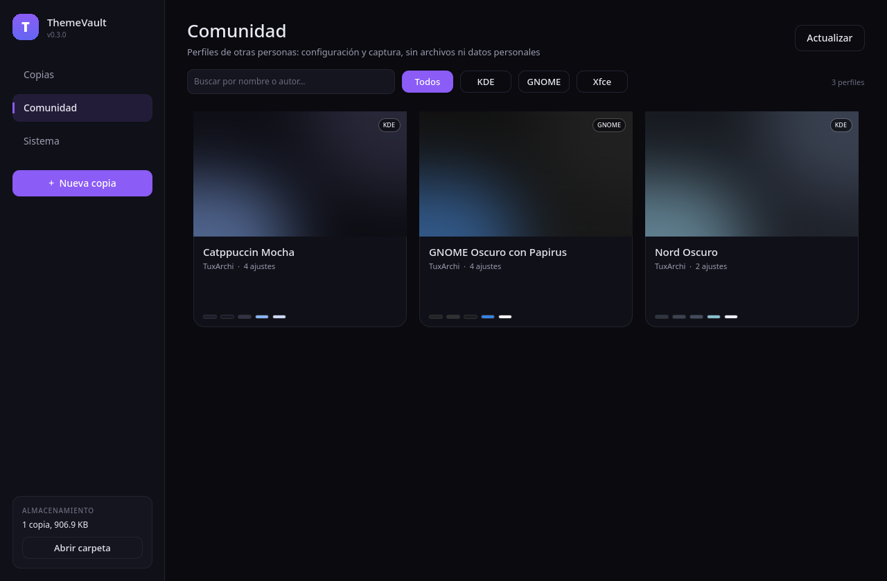
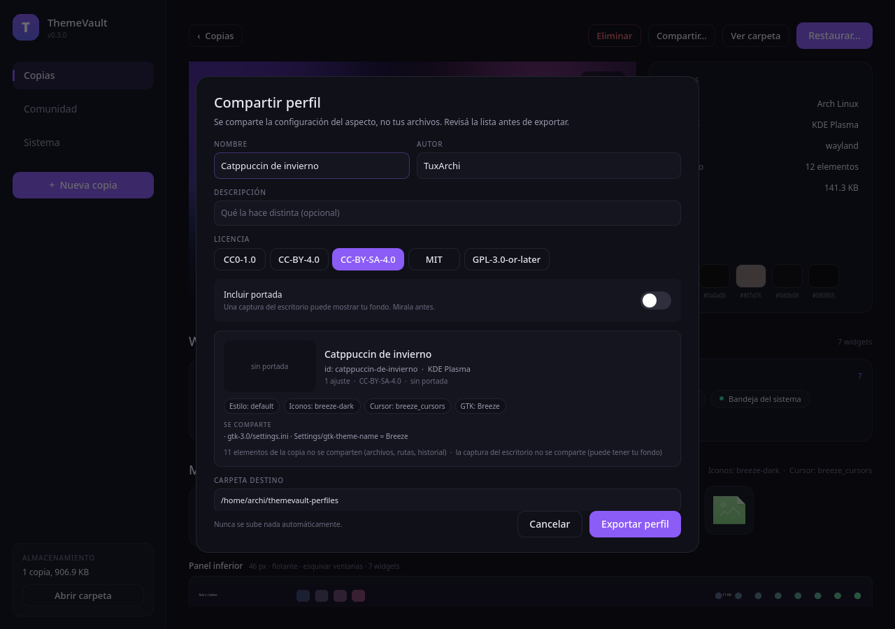

Temas y estilos
Tema GTK/Qt, iconos, cursores, esquemas de color y fuentes de usuario, con deduplicación real por contenido.
ThemeVault toma una foto del estado visual de tu escritorio —temas, iconos, cursores, fuentes, fondos, widgets y barras— y te deja volver a ella cuando quieras, incluso en otra máquina.
Funciona en KDE Plasma, GNOME, Xfce, Cinnamon, MATE, Budgie, LXQt, COSMIC, Hyprland, niri, Sway, River, Wayfire y labwc · X11 y Wayland · Sin telemetría

Cada copia guarda su portada: el escritorio sin ventanas, una muestra del cursor, los iconos y la paleta. Y una tira de cada barra de tareas.




Tema GTK/Qt, iconos, cursores, esquemas de color y fuentes de usuario, con deduplicación real por contenido.
dconf para GNOME, Cinnamon, MATE y Budgie; xfconf para Xfce; INI de Plasma y LXQt; KDL, XML, RON y más para los compositores Wayland. No solo copia archivos: también reaplica la configuración.
Interpreta Hyprland, niri, Sway, River, Wayfire y labwc, y muestra tus combinaciones personalizadas en el detalle de la copia.
Waybar, Noctalia, DankMaterialShell, Quickshell y AGS se respaldan junto con el compositor, sin copiar fotos ni scripts personales.
Qué widget está en cada panel o escritorio, en el orden real, con tamaño, posición, flotante y modo de ocultado.
Captura del escritorio sin ventanas, muestra del cursor y de los iconos, paleta y tira de cada barra de tareas.
Perfiles de otras personas: mirá la portada, revisá los requisitos y aplicalos con un clic.
Exportá tu estilo con vista previa de lo que se publica. La portada es opcional y nada se sube solo.
Buscá e instalá widgets de store.kde.org sin salir de la app. Solo se conecta cuando se lo pedís.
Plan previo, restauración selectiva por categoría, punto de retorno automático y nada fuera de tu $HOME.
Detecta cada pantalla, recorta la captura y genera una portada por monitor. Cambiás de imagen desde la galería.
Un solo archivo, sin dependencias. Descargalo desde la última release.
chmod +x ThemeVault-*.AppImage
./ThemeVault-*.AppImageSi ya tenés Python 3.10 o superior y un entorno virtual:
pip install "themevault[gui]"
themevault uiPara probar el último cambio o colaborar:
git clone https://github.com/TuxArchi/themevault
cd themevault
python3 -m venv .venv
.venv/bin/pip install -e ".[gui]"
.venv/bin/themevault uiThemeVault es libre y gratuito, sin anuncios ni telemetría, y lo mantengo en mi tiempo libre. Si te resulta útil, invitame un café: ayuda a dedicarle más horas, probar más escritorios y sostener las releases.
Apoyar en Ko-fiTambién podés ayudar reportando bugs, probando en tu distribución o contribuyendo código.